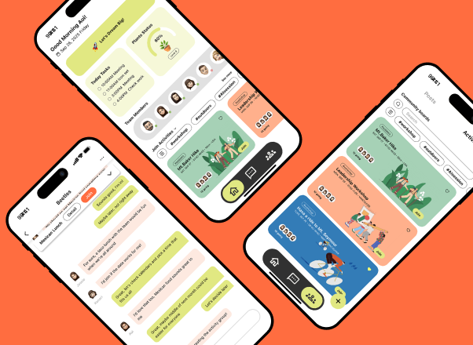
Circle Up
A platform to make remote work more human, encouraging spontaneous interactions, shared rituals, and team bonding.
The Problem
As remote work becomes the norm, companies struggle to maintain team culture and connection. The spaces where casual conversations used to happen are missing. According to our research, remote workers often feel isolated and lack a sense of belonging within their organization.
How might we create a digital space that encourages casual interactions and bonding for remote teams?
Ideation
We brainstormed various ideas using storyboards and competitive analysis. We decided to focus on a gamified plant-growing concept where teams nurture a virtual plant together based on their interactions.
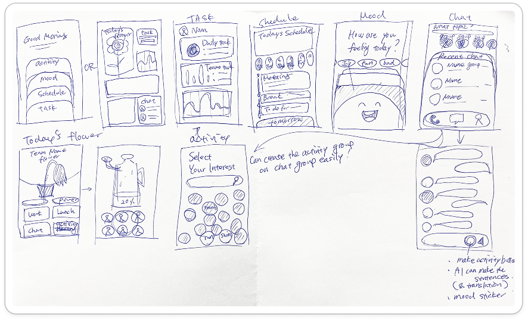
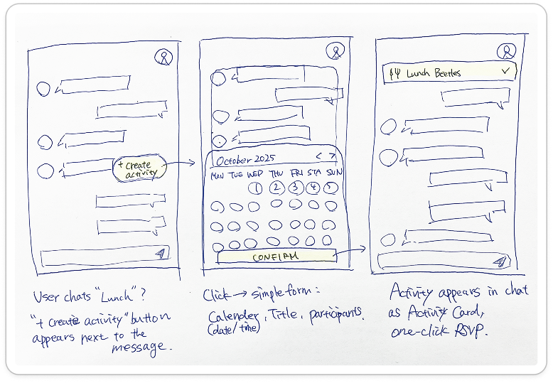
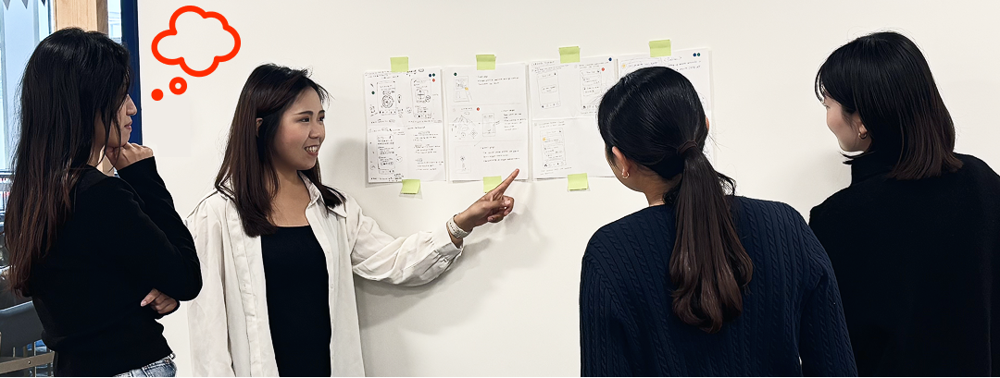
Information Architecture
We structured the app around three main spaces: Garden (team overview), Chat (communication), and Profile. Connecting these spaces seamlessly was key to ensuring users didn't feel overwhelmed.
User Flow
Below is the primary user flow mapping out how a new team member joins a workspace, participates in a quick check-in, and sees the team's plant grow as a result of their interaction.
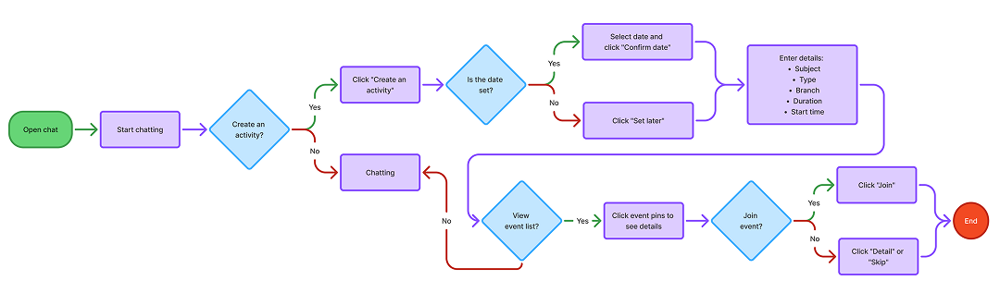
Wireframe Exploration
After deciding on the flow, we moved to mid-fidelity wireframes to establish the layout, hierarchy, and core interactions of the chat features.
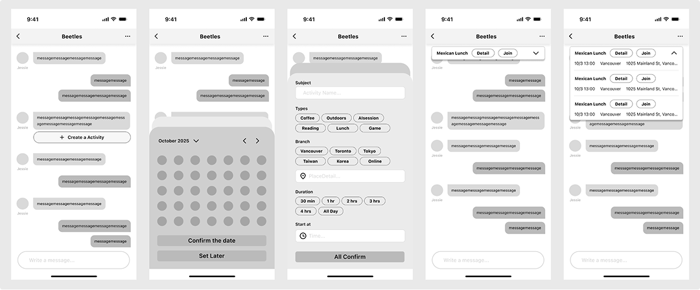
Design Evolution
The final UI brings a warm, playful, and approachable energy to the workspace. We used soft shapes and a cheerful color palette to differentiate it from traditional, rigid enterprise tools.
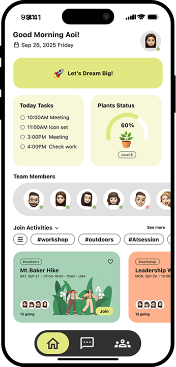
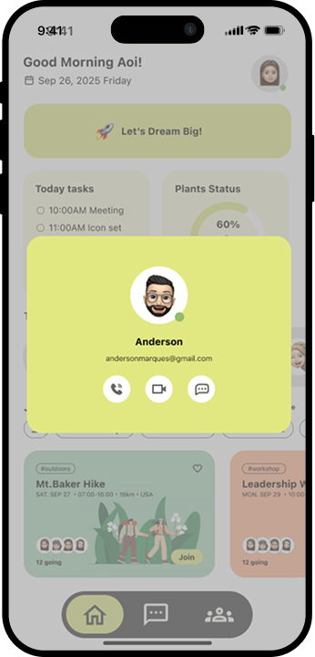
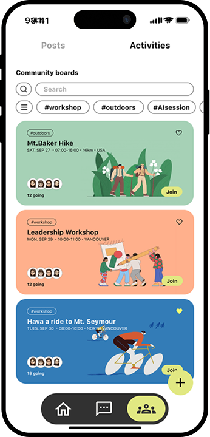
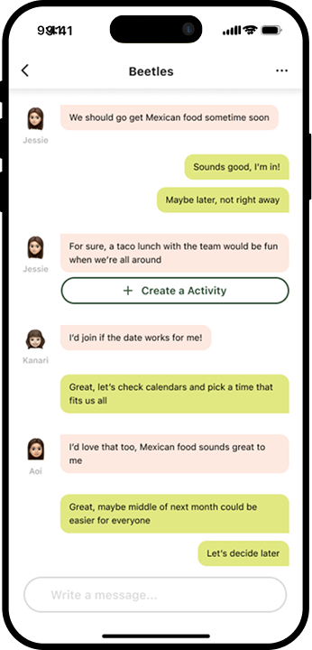
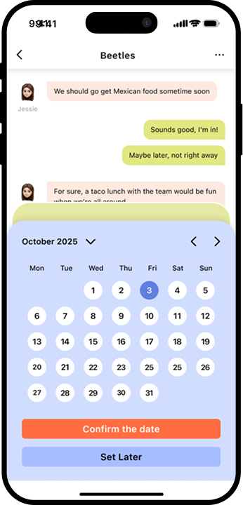
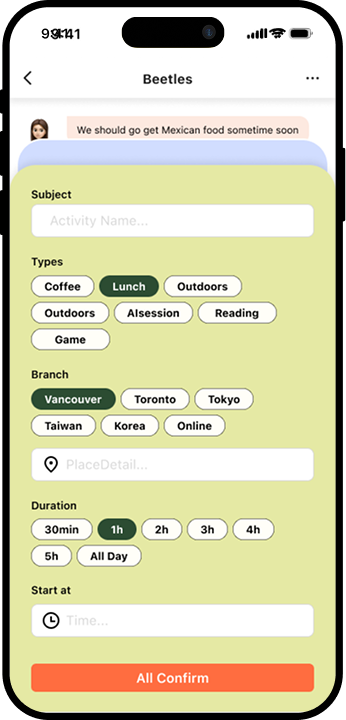
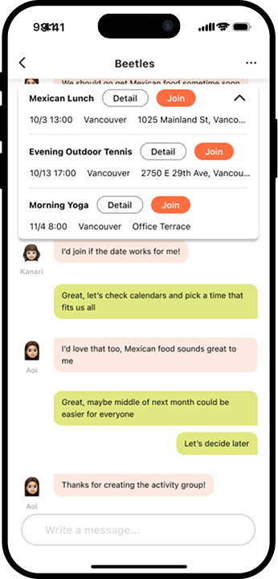
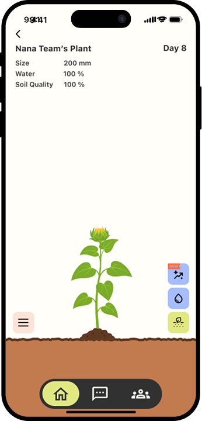
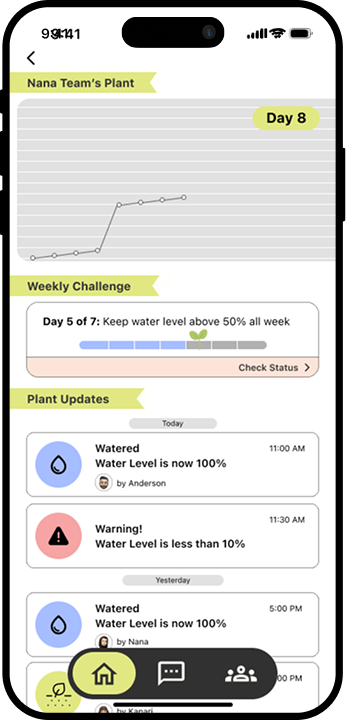
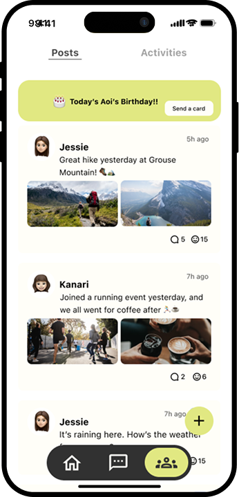
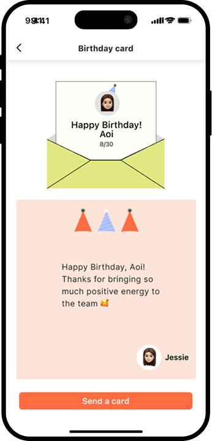